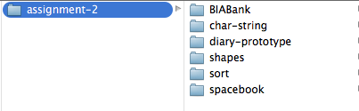
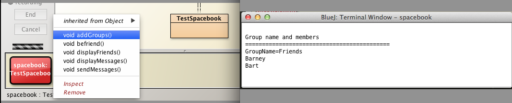

Readme
Assignment 2: This assignment is based on materials contained in the following labs and presentations:
- Labs
- Objects and Classes
- Class analysis and Refactor
- Object Interaction
- Grouping Objects
- More sophisticated behaviour
- BlueJ Debug and Unit Test
- Designing Classes (Spacebook)
- Presentations
- lectures 1 to 10
- characters
Guidelines
/**
*
*/
- Further information on code styling is in JavaCodeConventions available in the Slides section of this assignment.
- The coding convention you use should match is that in the Cone class.
- Indent 4 spaces.
- Use self-documenting variable and method names.
- Not as terse as:
- But not too long
- Example: String theBankManagersTemporaryAssistant (definitely too long).
- How about:
- Example: String managerAssistant
- It is acceptable to use single character variable names for loop counters.
- Use blank lines sparingly.
Setup
Download the archive assignment-2.zip available here and expand to a directory workspaceBlueJ/assignments/assignment-2.
Your directory structure should be as depicted in Figure 1.

The folder assignments-2 should contain the projects shown in Figure 2.

The projects contain skeleton code which forms the basis of the questions that follow.
Q1 diary-prototype [17/100]
Task 1
In diary-prototype project create a class named Calendar containing the following method:
- public static String dayName(int dayNumber)
Use the switch statement.
- Note: Although it is possible to implement this method using if-else, it is essential to use switch.
- Zero marks will be given for alternative implementations.
Specification dayName:
- Parameter dayNumber in range [0, 6]
- 0 represents Sunday, 1 represents Monday and so on.
- Returns the name of the day corresponding to the parameter
- For example invoking dayNumber(2) returns Tuesday.
Task 2
Add a further method to Calendar:
- public static String monthName(int monthNumber)
Use the switch statement .
- Note: Although it is possible to implement this method using if-else, it is essential to use switch.
- Zero marks will be given for alternative implementations.
Specification monthName
- Parameter monthName in range [0, 11]
- 0 represents January, 1 represents February and so on.
- Returns the name of the month corresponding to the parameter
- For example invoking monthName(6) returns July
Task 3
DiaryTester: Write the positive regression test checkDailyCapacity:
Skeleton code: DiaryTester
public boolean checkDailyCapacity(int dayNmr)
{
Day day = ...;
int nmrHrsAppointment = 1;
Appointment[] appointment = ...;
//Create 1-hour appointments for day
for(int j = 0; j < Day.MAX_APPOINTMENTS_PER_DAY; j += 1)
{
appointment[j] = ...;
}
boolean isAppointmentAdded = true;
//add all appointments
for(int j = 0; j < Day.MAX_APPOINTMENTS_PER_DAY; j += 1)
{
isAppointmentAdded = ...;
}
return isAppointmentAdded;
}
Skeleton code DiaryTesterTest
@Test
public void positiveTests()
{
...
//test for each workday, Monday to Friday inclusive
//Do not use magic numbers
for(int dayNmr = 0; dayNmr < ...; dayNmr += 1)
{
assertEquals(true, diaryTester.checkDailyCapacity(dayNmr));
}
}
Task 4
Copy the method checkDailyCapacity, save as checkDailyCapacity2 and refactor so that
- [1] A typical actual parameter description in Appointment constructor resolves to:
- Day Monday
- Day 0
- Hint: Use the newly developed Calendar class.
- Hint: Recall the signature of Appointment is Appointment(String description, int duration)
- [2] Print for each appointment using the following format:
- Day Friday : Appointment number 1 Appointment duration 1
- See Figure 1 Invoking checkDailyCapacity2
Task 5
DiaryTester : Write the positive regression test checkDailyCapacity3:
This task remembles Tasks 3 & 4 except that
- instead of using an array of Appointment objects you are required to use an ArrayList of objects
- Note: use a for loop, as before, to populate the ArrayList of appointments
- As you populate the ArrayList, print out the details of each appointment as depicted in Figure 2.
-
instead of using a for loop to make the appointments you are required to use an iterator.
-
Its purpose is to attempt to add a 1-hour appointment to every available slot during a specific day.
- If the attempt succeeds, the method returns true, else false.
-
The signature is public boolean checkDailyCapacity3(int dayNmr)
- Here is the method specification
- the argument range is [0, 4] representing the four workdays, Monday to Friday
- create an ArrayList of 1-hour appointments, one for each working hour in the day
- recall the signature of Appointment is Appointment(String description, int duration)
- make the argument description
- "Day "+ dayNmr + " : Appointment number" + j
- where j is the hour number and is in the range [0, Day.MAX_APPOINTMENTS_PER_DAY)
- a typical description would, therefore, be
- Day 1 : Appointment number 4 Appointment duration 1
- Incorporate method into DiaryTester in the positiveTests method
- Insert method in a loop to be invoked for all 5 working days
- Run all regression tests using DiaryTesterTest Test All.
Skeleton code: DiaryTester
public boolean checkDailyCapacity3(int dayNmr)
{
Day day = ...;
int nmrHrsAppointment = 1;
ArrayList<Appointment> appointment = ...;
//Create 1-hour appointments for day
for(int j = 0; j < Day.MAX_APPOINTMENTS_PER_DAY; j += 1)
{
//populate the list appointments
...
//print out the day number appointment number and appointment duration matching the layout in Figure 2
...
}
boolean isAppointmentAdded = true;
//add all appointments
Iterator<...> it = ... ;
int hour = ...;
while(it.hasNext())
{
isAppointmentAdded = ...;
}
return isAppointmentAdded;
}
Skeleton code DiaryTesterTest
@Test
public void positiveTests()
{
...
//test for each workday, Monday to Friday inclusive
//Do not use magic numbers
for(int dayNmr = 0; dayNmr < ...; dayNmr += 1)
{
assertEquals(true, diaryTester.checkDailyCapacity3(dayNmr));
}
}

Q2 BIABank [17/100]
Task 1
Create a class in BIABank project named FinanceUtilities.
- Write a method in this class named isValidAscending to check the validity of a PIN (Personal Identification Number)
- The specification and signature follows in Figure 1:
- Here are examples:
- Valid PIN: 12234
- Valid because although numbers ascending they are not consecutive
- Invalid PIN: 12345
- Invalid because numbers are consecutive
Task 2
- Write a method in FinanceUtilities named isValidDescending to check the validity of a PIN (Personal Identification Number)
- The specification and signature follows in Figure 2:
- Here are examles:
- Valid PIN: 654432
- Valid because although numbers descending they are not consecutive
- Invalid PIN: 654321
- Invalid because numbers are consecutive
Task 3
- Write a method in FinanceUtilities named isValidAscendingDescending to check the validity of a PIN (Personal Identification Number)
- The specification and signature follows in Figure 2:

- Same principles apply as in Task 2 and Task 3
- If numbers are not consecutive then PIN valid
- If numbers consecutive ascending or descending the PIN is invalid
Task 4
Create a JUnit test class FinanceUtilitiesTest.
Using the BlueJ recorder or otherwise write a positive test method complying with the following specification:
@Test
public void testPinsTrue()
- Write 4 tests in this method testPinsTrue that invoke:
- isValidAscending with argument "12234"
- isValidDescending with argument "43221"
- isValidAscendingDescending with argument "12234"
- isValidAscendingDescending with argument "43221"
Invoke FinanceUtilitiesTest.Test All:
- all tests should succeed.
Task 5
In FinanceUtilitiesTest, using the BlueJ recorder or otherwise write a negative test method complying with the following specification:
@Test
public void testPinsFalse()
- Write 4 tests in this method testPinsFalse that invoke:
- isValidAscending with argument "1234"
- isValidDescending with argument "4321"
- isValidAscendingDescending with argument "1234"
- isValidAscendingDescending with argument "4321"
Invoke FinanceUtilitiesTest.Test All
- all tests should succeed.
Q3 char-string [30/100]
Write a series of methods described in the tasks below in the class CharString, a skeleton for which is provided:
Task 1
- Write a method to determine if a character is lower case.
- Signature of method should be:
- public static boolean isLowerCase(char ch)
- Method returns true if character is lower case else it returns false
Task 2
- Write a method to determine if a character is upper case.
- Signature of method is:
- public static boolean isUpperCase(char ch)
- Method returns true if character is upper case else it returns false
Task 3
- Write a method to convert a character to upper case.
- Signature of method is:
- public static void toUpper(char ch)
- Assume that char ch is a letter (a - z, A - Z)
Task 4
- Write a method to count the number of words in a String object.
- Signature of method is:
- public static int wordCount(String string)
- Method returns the number of words
- Hint: consider using Character.isWhitespace(char ch)
Task 5
- Write a method to count the number of occurrences of a specified character char ch in a String object.
- The signature of the method is:
- public static int characterCount(String string, char ch)
- Method returns the number of characters discovered
Task 6
- Write a method to determine if a specified String object is a palindrome
- A palindrome is a string that reads the same backwards as forwards
- Acceptable example: Able was I ere I saw Elba
- Note: ignore case
- The signature of the method is:
- public static boolean isPalindrome(String string)
Invoke the method main: the output as shown in Figure 1 should be generated for correctly working methods.

Task 7
Write a method in the Sort class located in the sort project to sort an array of Java String objects.
- The method should be similar to that already encountered in the labs called quadraticSort and included in class Sort in the project sort.
- quadraticSort(int[]) is provided in the project sort, included with this assignment.
- The signature of the method to be written is
- public static void quadraticSort(String[] s)
- You are required to write a helper class to swap or exchange two elements within the String array
- Signature: swap(String[] s, int to, int from)
- A test class TestSort is provided below:.
- Use it to check the output from your code.
public class TestSort
{
public static void stringSort()
{
//Test string sort
String[] s = {"ggg", "ddd", "eeeff", "aaa", "bbb", "xxx", "zzz", "ccc", "xabcdef", "iiiiiii"};
System.out.print("\nBefore sorting: ");
for(String str : s)
{
System.out.print(str + " ");
}
Sort.quadraticSort(s);
System.out.print("\n After sorting: ");
for(String str : s)
{
System.out.print(str + " ");
}
}
}
Q4 spacebook [36/100]
The following tasks relate to classes in the spacebook project provided.
Task 1 User Message
Write a method in User to send a message.
- Signature: public void sendMessage(Message message)
- Add the message to the outbox of the sender and inbox of target.
- Hint: Information on the sender and target is contained in the message.
Task 2: User Friendship
Presently the befriend method in User ensures a user cannot befriend itself.
- Modify the befriend method to ensure that the same user cannot be befriended twice.
Here is the skeleton code:
public void befriend(User friend)
{
if(friend == this)
{
System.out.println("Opps! You seem to have made a mistake in attempting to befriend yourself");
}
else if(friendshipsContains(friend))
{
System.out.println(friend.firstName +" is already a friend");
}
else
{
Friendship friendship = new Friendship(this, friend);
friendships.add(friendship);
}
}
As you can see from the above skeleton code, you are required to write the method boolean friendshipsContains(User friend)
- The method should check the instance variable friendships and return true if the argument friend is present in the list (as a targetUser), else false.
Task 3: Group
Develop a class named Group to implement the concept of a group of friends such as family, friends, clients and so on.
- Its fields are
- String groupName
- to represent the name of the group, example clients
- ArrayList<User> members;
- to contain a list of users, members of this group
- A constructor
- public Group(String groupName)
- A method to add a new member to the group
- public void addGroupMember(User user)
- A method to broadcast a message to the entire group
- public void broadcastMessage(Message message)
- A private helper method to print the group list as a column of data
- private String groupList()
- Override the toString method
- Test your code by invoking TestSpacebook addGroups
- Figure 1 shows typical output
Here is the skeleton code:
import ...
public class Group
{
String groupName;
ArrayList<User> members;
public Group(String groupName)
{
...
}
public void addGroupMember(User user)
{
...
}
/**
* Send a message to the inbox of each group member
*/
public void broadcastMessage(Message message)
{
...
...
...
}
/*
* @return all the group names in a single string
* Use the \n between each name to ensure printed on separate lines
*/
private String groupList()
{
String names = "";
....
return names;
}
@Override
public String toString() {
return "GroupName=" + groupName + "\n" + groupList();
}
}

Task 4: User Status
In the User class:
- Use an enum to define status:
- enum Status {ONLINE, OFFLINE, BUSY, AWAY}
- Create a Status field
- Set the default status field to "ONLINE" at User instantiation
- Write a method to set the status field's value
- Signature: public void setStatus(...)
- Write a method to display a list of friends filtered based on status
- Signature: public void displayFriends(Status status)
- Test by invoking displayFriends(Status status) on a User object with various Status values
- Test by invoking displayFriends() on a TestSpacebook object
- See Figure 2 for sample output

Task 5: Message
Add a subject field to the Message class
- Define enum Subject {PERSONAL, FAMILY, WORK, GENERAL}
- Subject subject
- Modify Message constructor to include a Subject parameter
- Complete the displayMessage method in Message to print output formatted as shown in Figure 3.
- Test by invoking displayMessages on TestSpacebook
//Skeleton code
...
public class Message
{
Subject ...;
String messageText;
User from;
User to;
public Message(Subject subject, User from, User to, String messageText)
{
this.subject = subject;
this.from = from;
this.to = to;
this.messageText = messageText;
}
public void displayMessage()
{
String nameFrom = from.firstName;
String nameTo = to.firstName;
System.out.println(... + " says \""+messageText + "\" to " + nameTo);
}
public void displayMessageContent()
{
System.out.println(messageText);
}
}

Task 6 User
Write a method in User class to display an array list of messages.
- Signature public void displayMessages(ArrayList<Message> messages)
- Hint: In this method, invoke the existing Message method displayMessage for each element in the list
- Test the method by invoking TestMessaging displayMessageList().
- Sample out depicted in Figure 4

Task 7 User Message
Write a method to display an array list of messages filtered by subject:
- Signature public void displayMessages(Subject subject, ArrayList<Message> messages)
- Hint: Invoke the existing Message method displayMessage for each element in the list
- Test the method by invoking TestMessaging displayMessageList(Subject subject).
- Sample out depicted in Figure 5

Task 8 MessageSort Message array
Write a method in MessageSort to sort an array of messages.
- Signature: public static void sortMessages(Message[] messages)
- Use the sorting algorithm developed in this assignment to sort the list
- Test your code by invoking sortArrayMessages on an instance of TestMessaging class provided (Figure 6)

Task 9 MessageSort Message ArrayList
Write a method in MessageSort to sort an ArrayList of messages.
- Signature: public void sortMessages(ArrayList<Message> messages)
- Use the sorting algorithm developed in this assignment to sort the list
- Test your code by invoking sortArrayListMessages on an instance of TestMessaging class provided (Figure 7)